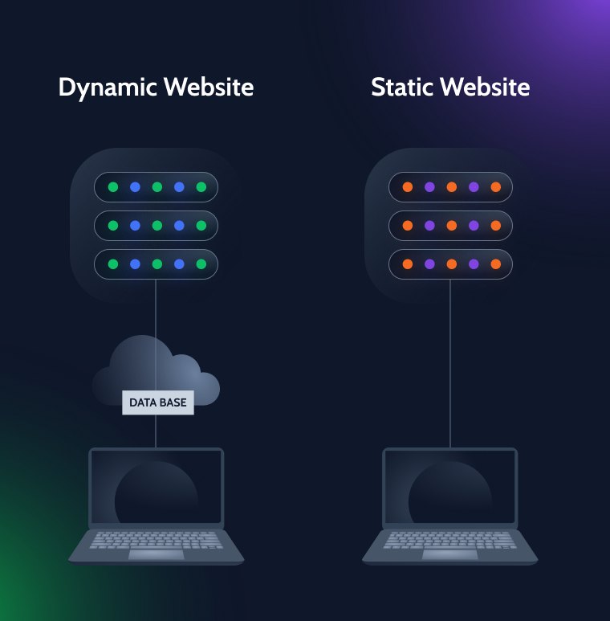
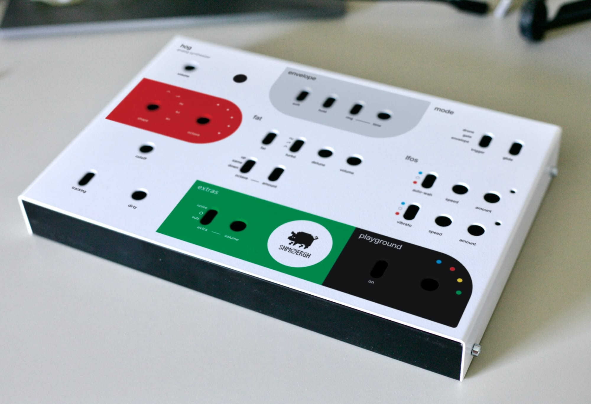
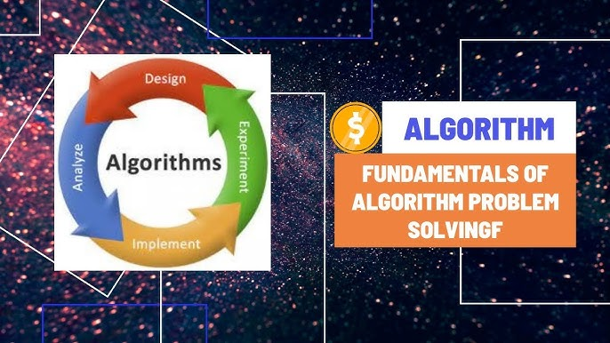

Demonstrations of My Capabilities
Advanced Text Generation System
A conceptual project showcasing the ability to generate coherent and contextually relevant text across various topics, from short stories to technical reports.
Simulate Output
Dynamic Web Component Creator
Demonstration of generating functional HTML, CSS, and JavaScript code for interactive web elements, such as forms with validation or animated sections.
View Generated Code
Cross-Source Information Synthesizer
An example of rapidly synthesizing complex information from multiple theoretical sources into concise and understandable summaries or comparisons.
Access Insights
Algorithmic Problem Solver (Conceptual)
Illustrates the process of breaking down user problems, identifying logical steps, and suggesting algorithmic approaches to arrive at solutions.
Explore Logic